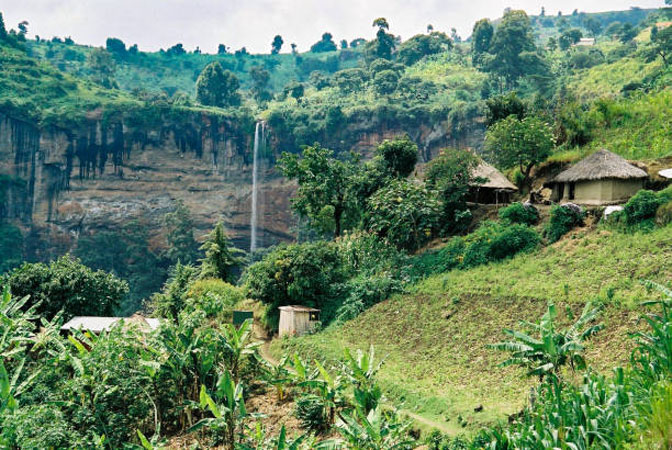

Day 2: White Water Rafting, Kayaking, Bungee Jumping
White Water Rafting
The main draw of Jinja is its heart-palpitation-inducing white water rafting.
There are three different levels of rapids to choose from. Class three rapids are for intermediates, class five
rapids for experts and adrenaline junkies, and class two rapids for families and beginners.
Helmets, life jackets, safety training and photos of the experience will all be included as part of the tour pac
kage.
There are no hippos in this part of the Nile and crocodiles are extremely unlikely (there has not been a crocodil
e related incident in 20 years of rafting).
Kayaking
For white-water kayakers, the Nile is one of the best rivers in the world.
If you have experience, but would benefit from a refresher, experienced guides and multi-day courses are available.
River Surfing is also available for those willing to brave the cold waters.
However, for beginners and families, a more sedate option is to kayak on the flat-water of Lake Bujagali.
Lake Cruises and Birding Tours
Lake Bujagali is also the venue for lunch and sunset cruises using two-storey cruisers similar to those on the K
azinga Channel in Queen Elizabeth National Park and the Nile at Murchison Falls.
Full and half day birding cruises are offered by specialised operators, providing the chance to see the local bird
life from the water.
Notable species include the martial eagle, white-backed night heron, rock pratincole, papyrus gonolek and crimson-rumped waxbill.
Bungee Jumping
If you are looking for an extra thrill, then a 44 metre bungee jump is available for the brave or foolhardy at Adrift’s Nile
High Camp.
Bungee jumping can be done both at night and during the day, but most people do it in the day to fully appreciate the madness
of it all - plummeting down before dipping your fingers into the Nile as the elastic pulls you to safety.
Adrift follow New Zealand safety standards, and per the guidelines regularly check that the equipment is safe to use.
Day 3: Quad Biking, Horse riding, and Lake Cruises and Birding Tours
Quad Biking
Quad biking takes adventure to a whole other level and does not require prior driving experience. A free
training session is conducted before each safari and trips are tailored to suit the riders’ ability and gi
ve the best possible adventure of whitewater rafting in jinja. Sliding across the puddles and potholes in
mud makes quad biking much more fun.
Horse Riding
Horse riding is done along the shores of River Nile and it is a great way to explore Uganda’s beauty. T
he surrounding landscape and the local communities make horse riding such a fun and adventurous experienc
e.Whitewater Rafting in Jinja also you can do some of birdwatcher also stand a chance of encountering ma
ny of the different bird species along the shores of River Nile.
Day 4: Transfer to Bwindi Impenetrable Forest National Park
After breakfast, depart at 6:30 a.m. for Bwindi Impenetrable Forest National Park, passing through Kampa
la, Mbarara Town, which is blessed with stunning scenery. You'll also see some rolling hills with terrac
es; it's a beautiful drive with all of these sights. When you arrive at the park, check into the lodge o
f your choice and spend the rest of the evening relaxing before the next activity. Stay the night and e
at there.
Accommodation option:
Budget: Bwindi Gorilla Conservation Camp
Mid-range: Lake Kitandara Camp, Gorilla Resort,
Gorilla Forest Camp, Buhoma homestead, Bwindi Volcanoes Lodge, Engangi Camp Uganda among others
Luxury: Nkuringo Bwindi Gorilla Lodge, Clouds Mountain Gorilla Lodge, Buhoma Lodge, Volcanoes Bwindi
Day 5: Gorilla tracking & Community Walk – Bwindi Forest
You will have your breakfast at 6:30 a.m., then proceed to the park headquarters with a packed lunch to
receive a briefing from trained park rangers. At 8:00 a.m., park rangers will accompany you as you enter
the mist forest to trek mountain gorillas. If you are not physically fit enough, you may need to use a w
alking stick. You should also consider paying porters a small fee to carry your belongings just in case.
The trek can last between two and eight hours, but you only have one hour to see and interact with the
gorillas. Return to the resort to unwind after your hike. Later that evening, take a walk through a d
ifferent village, such as the Batwa community, to connect with the locals and learn a lot from them be
fore retiring to the lodge.
Day 6: Departure
After a delicious breakfast, you will depart for Kampala. Our driver will drop you off at your Kampala
accommodation facility or take you to Entebbe Airport. This will mark the end of your 6 days tour.